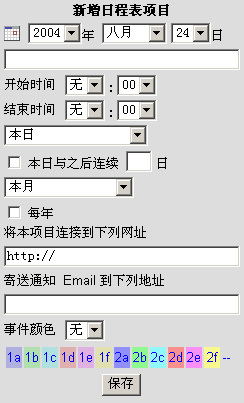

Open Webmail 使用指南
>>
增加日程表项目
当然要正确地使用日程表，你必须要输入记事项目。非常简单，只要编辑日程表中的空白区域，就可以啦。（参考
查看日程表
得到相关资料）。下面这张图是事件清单右方的编辑区图形。
Open Webmail关于增加记事项目的功能相当详细，不需要切换到另一页才能新增项目。相反地一次就让你完成所有事情，对你而言，真的很容易。
要增加工作项目，在新增日程表项目下方文字区域输入简单描述。然后需要选择项目发生的时间，另外，选择“开始时间”，项目会发生的时、分（AM或PM -- 上午或下午）。也可以选择项目的“结束时间”（根据选择“开始时间”相同的步骤方法）。如果你在“开始时间”上选择“无”，则该项目会被增加到每日日程表项目的下方，且没有标明时间。假如你知道发生的日期却不清楚确实的时间，你就可以这样应用。如果你选择没有“结束时间”，则该项目的差别只是没有标明结束时间而已。
你也可以指定该项目在本月中发生的频率，假如今天是该项目是唯一发生的一天，那就让下拉式选单保持在“今天”。然而，选择了该项目 每隔 某些天数就会发生，日程表会自动判别今天是几号，并且调整下拉是选单到相对应的项目。例如，假如今天是星期四，那另两个选项就会是 "这个月 第一个星期四" 和 "这个月 每个星期四"。这会使得该项目调整成选项文字上的意义。
假如你想要更多功能，Open Webmail的日程表让你有更详细的功能，你可以在“本日与之后连续___日”（“___”是一个可输入的文字栏位）上勾选方块，根据该项目连续发生几天，填入数字。例如，你有个项目是从本周星期一到星期四的某时段发生，你就要在月日程表上选取该项目发生的星期一，然后勾选“本日与之后连续...”前的方块，并且输入“3”到文字区域中。
其他的选取方块（“今年所有月份”以及“每年”）可以让你将事件设定为这些频率，“今年所有月份”会把项目复制到每一个月份去，以此类推，“每年”就会每一年复制一次。像“本日与之后连续...”等只会在被选取时才会发生作用。也因为它们是选取方块，你可以同时选取一个以上。
超链接 关联到一个网站或是文件，可用来协助你记忆更多关于该项目的细节。可以连结到一个网站、虚拟档案，或是在你电脑上的实体档案。假如是连结到网际网路上的档案或是页面，在文字区域中保留http://这个普遍的符号。当然如果是连结到你电脑上的档案，就把开头符号改为file:///，然后指定该档案的路径（例如： file:///c:/my documents/file.txt）。注意，如果你建立的一个连结到你电脑上档案的链结，它就只能在这部电脑上存取，（除非，该档案也同样存在你工作上会用到的其他电脑上）。建议你保留http://在文字区域中，并且建立连结到一个随时上线的网站上，以确保随时有效。
最后，再你完成输入所有项目资料时，点击“保存”按钮，就会被输入到当天的项目清单中（和其他任何你所指定的日期中）。
在你建立项目后，你可以点选项目右方 [修改] 字样，以编辑该项目。依据上面所叙述的步骤来编辑也是一样地，唯一无法变更的是项目发生的周期，一种解决方法是按 [删除] 字样来删除该项目，然后建立一个新的事件项目，相同的名称和时间，但是变更为不同的周期（每月或是每年）。
|